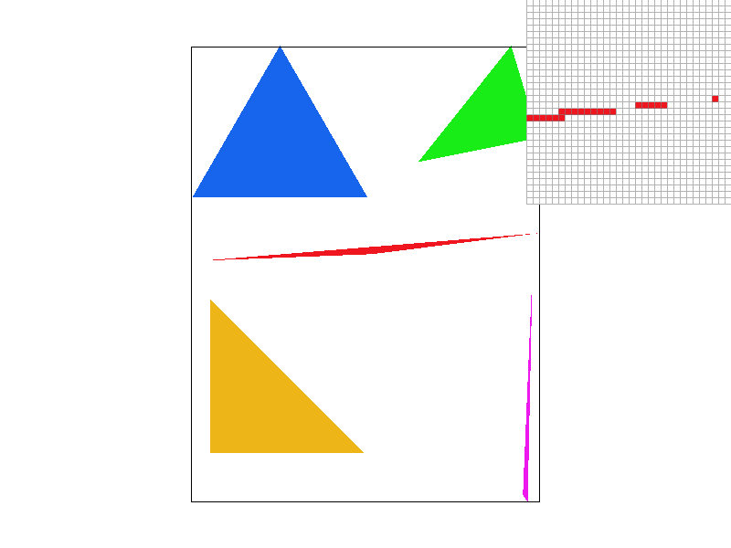
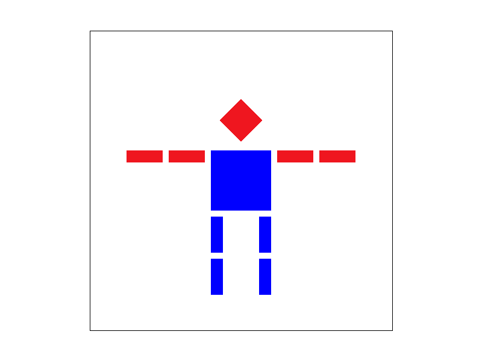
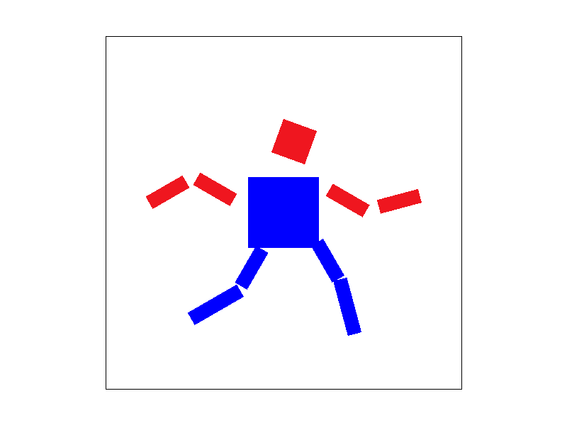
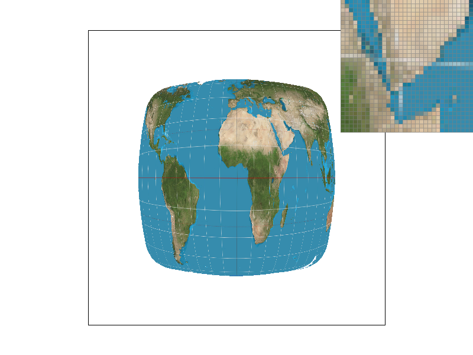
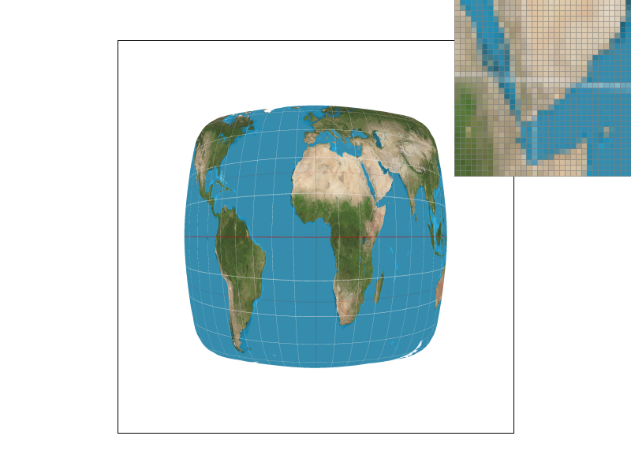

Overview
In this project, we primarily focused on the intricate process of image rasterization. Rasterization, at its core, involves converting a set of geometric data into a pixel-based format, thereby facilitating the creation of diverse digital images. The scope of rasterization extends to several key tasks, such as drawing triangles, implementing supersampling, executing graphic transformations, and applying texture mapping. A significant aspect of our exploration centered on triangle rasterization. Within this domain, we successfully developed and integrated various functionalities. These include the implementation of anti-aliasing through advanced supersampling techniques, the enhancement of shading by employing linear interpolation for vertex coloring, and the adept application of texture mapping, utilizing various methods associated with mipmap technology.
Section I: Rasterization
Part 1: Rasterizing single-color triangles
Initially, our procedure involves verifying the orientation of the vertices, ensuring they follow a counterclockwise sequence. If the vertices do not meet this criterion, we promptly adjust their order through a swapping mechanism. Subsequently, we assess whether the sample points, located within the pre-defined bounding box, fall within the confines of the triangle. This is achieved through the application of the Three Line Tests. In instances where a sample point is determined to be inside the triangle, we modify its representation in the sample buffer by assigning it a distinct red color. The construction of the bounding box is a meticulous process. It involves a comparative analysis of the vertices' coordinates: we determine the bounding box by identifying the minimum and maximum values along both the x and y axes. This methodical approach ensures precise delineation of the area pertinent to our rasterization process.

Part 2: Antialiasing triangles
The supersampling algorithm we employed operates by dividing each pixel within the triangle into '1 x sample rate'
number of sub-samples. Consequently, the size of the sample buffer is expanded to '1 x sample rate x original
size'. In this arrangement, every '1 x sample rate' number of points are contiguous within the sample buffer.
Our next step involves assessing whether these subdivided samples fall within the triangle. If they do, their
color is altered to red in the sample buffer. Prior to the final resolution onto the framebuffer, the algorithm
calculates the average color of these divided samples. This averaged color value is then transmitted to the
framebuffer.
The use of supersampling is particularly advantageous for antialiasing purposes. It enhances image quality by
increasing the sampling frequency, followed by a downsampling process to obtain an averaged representation.
To facilitate this, we introduced a novel function named 'super_sample_fill_pixel'. This function incorporates an
additional parameter, 'offset', which represents the offset for the subdivided samples. The offset varies from 0
to 'sample rate - 1'. For instance, with a sample rate of 4, the first set of subdivided samples would occupy
indices 0 to 3 in the sample buffer. As the sample rate is adjusted, the sample buffer is dynamically resized to
'1 x sample rate x original size'.
Through the process of averaging the colors of the subdivided samples, supersampling effectively smoothens the
edges of the image, leading to a more visually pleasing result.
|

|
|
|
|

|
Part 3: Transforms
We try to let the cube man run.
|

|

|
Section II: Sampling
Part 4: Barycentric coordinates
In this task, we employ the Barycentric coordinates formula to execute linear interpolation shading, guided by the color of the vertices. Barycentric coordinates offer a unique method for representing a point's position relative to a triangle. They describe the point as a linear combination of the triangle's vertex coordinates, with the constraint that the sum of the weights assigned to these coordinates equals one. The variation in these weights corresponds to different positions within the triangle. This method extends beyond mere coordinate representation; it can also be applied to other attributes like colors and normal vectors. This flexibility is particularly advantageous for linear interpolation. By leveraging this property, we can achieve smooth color transitions within the triangle, based on the colors defined at its vertices. The effectiveness of this approach is illustrated in an accompanying figure, which displays the results of linear interpolation shading on a circular shape.

Part 5: "Pixel sampling" for texture mapping
In this task, our focus is on implementing texture mapping using both nearest neighbor sampling and bilinear
interpolation methods, specifically when the mipmap level is set to 0.
The fundamental principle of pixel sampling in texture mapping involves several steps. Given the surface
coordinates and texture coordinates of a triangle's three vertices, along with the surface coordinates of a sample
point, we utilize the Barycentric coordinate formula to calculate the weights. These weights then help us deduce
the texture coordinates of the sample point on the texture image. Based on these texture coordinates, we proceed
with the sampling process, which includes methods like nearest neighbor sampling and bilinear interpolation.
Nearest neighbor sampling involves selecting the closest texel to represent the target pixel. However, this method
can lead to a mosaic-like appearance in the resultant image when the texture image is of a smaller size, as
multiple pixels might map to the same texel. Bilinear interpolation offers a more refined solution to this issue.
It uses four adjacent texels and averages their colors, resulting in a smoother image with reduced aliasing
effects.
We demonstrate this with four PNG screenshots, which include: nearest neighbor sampling at 1 sample per pixel,
nearest neighbor sampling at 16 samples per pixel, bilinear sampling at 1 sample per pixel, and bilinear sampling
at 16 samples per pixel.
Observations reveal that at the same sampling rate, images produced by nearest neighbor sampling exhibit
noticeable white gaps and jagged edges. In contrast, those generated through bilinear interpolation appear
considerably smoother. This difference is particularly pronounced when using a pixel inspector, as the mosaics in
nearest neighbor sampling are more distinct, while those in bilinear interpolation are more blended. Furthermore,
under the same sampling method, a higher sampling rate correlates with a smoother image. With a lower sampling
rate, nearest neighbor sampling results in each pixel corresponding to more texels in the texture. This leads to a
greater loss of information and an increased likelihood of jaggedness, creating a more pronounced contrast with
bilinear interpolation.

|

|

|

|

|
|
Part 6: "Level sampling" with mipmaps for texture mapping
In this task, our primary objective is to implement texture mapping using various mipmap levels, incorporating
techniques like nearest mipmap level selection and linear filtering.
The process begins by determining the appropriate mipmap level. Utilizing barycentric coordinates, we calculate
the UV coordinates for both the primary sampling point (x, y) and its adjacent points (x+1, y) and (x, y+1) during
the rasterization phase. Given that dx and dy are both set to 1, we can derive the derivative vectors of u and v
relative to x and y by simple subtraction. We then calculate the maximum norm of these two derivatives and apply a
logarithmic function to ascertain the floating-point mipmap level. For nearest neighbor level methods, this level
is rounded to obtain the final level. In contrast, linear filtering involves identifying the two nearest levels by
rounding up and down, sampling colors from both levels, and executing a weighted average for the final color.
Of the three methods we explored—pixel sampling, level sampling, and varying the number of samples per
pixel—single-pixel sampling emerged as the fastest with the least memory consumption. Mipmap level sampling stands
in the middle, while supersampling is the slowest and most memory-intensive.
We demonstrate our findings with four images, showcasing texture mapping of different method combinations: L_ZERO
and P_NEAREST, L_ZERO and P_LINEAR, L_NEAREST and P_NEAREST, and L_NEAREST and P_LINEAR.
Observations indicate that, at an equivalent mipmap level, bilinear interpolation outperforms nearest neighbor
sampling in quality. Furthermore, under a consistent sampling method, higher mipmap levels yield smoother texture
mapping images. A closer inspection using a pixel inspector reveals that the pixels under the "L_NEAREST and
P_LINEAR" combination are relatively blurred, with fewer jagged edges, compared to other combinations.
|
|

|

|

|

|
|